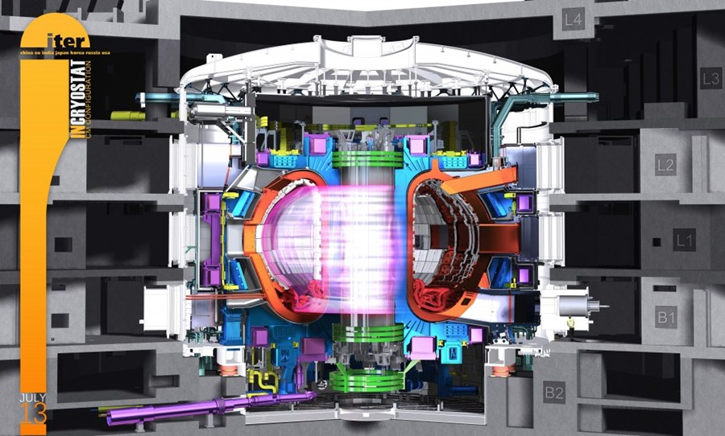

El acrónimo ITER responde a las siglas International Thermonuclear Experimental Reactor (Reactor Experimental Termonuclear Internacional), aunque la palabra “Iter” también significa “el camino” en latín. Se trata de uno de los proyectos energéticos más ambiciosos del mundo, cuyo reactor tendrá el diseño Tokamak
PROCESO DE FUSIÓN
La fusión nuclear es un proceso que libera mucha energía, pero para el cual a su vez se necesita mucho calor,
Para que esto sea rentable energeticamente se necesita un proceso óptimo. Se usarán como combustible el deuterio y el tritio(isótopos del hidrógeno)
Un Tokamak es un reactor termonuclear por confinamiento magnético, que tiene forma de cámara toroidal o cilindro anular toroide, algo parecido a una rosquilla sin extremos.
Es un tubo hueco, rodeado exteriormente con unas bobinas que harán posible la trampa magnética. Por su interior circula el plasma confinado, a más de 150 millones de grados, guiado desde el exterior por un campo magnético, con la finalidad de que el plasma sea confinado y no toque las paredes del Tokamak, lo cual causaría pérdida de temperatura.
Para que el reactor sea seguro necesita presión baja con el fin de que la densidad del plasma también lo sea.

Tecnológicamente esto puede ser complicado, pero es indispensable para el buen funcionamiento del reactor
PARTES DEL REACTOR TOKAMAK
Helio para refrigerar
Intercambiador de calor para refrigerar también
Camara toroidal. Aquí van los imanes superpotentes que generan un campo magnético cuyo objetivo es contener el plasma.
Este campo magnético tiene 13 teslas (una bestialidad pocas veces conseguida)
TRAMPA MAGNÉTICA Y SUS PARTES
La trampa magnética se obtiene por medio de varios conjuntos de bobinas (circular y helicoidal) que configuran totalmente las superficies magnéticas antes de generar el plasma.
La acción conjunta de estos campos magnéticos origina superficies magnéticas que guían las partículas del plasma para que no choquen contra las paredes de la cámara.
Criostato:Se trata de una cámara de acero inoxidable que proporciona un alto vacio para facilitar la reaccion
Divertor:Es la base de la camara de vacio del reactor, que purifica el plasma, permitiendo al extraccion de las impurezas resultantes durante la fusion.
El agua refrigerada que circula en su interior refrigera el divertor del bombardeo de los neutrones de alta energía del plasma, que chocan contra sus escudos de tungsteno